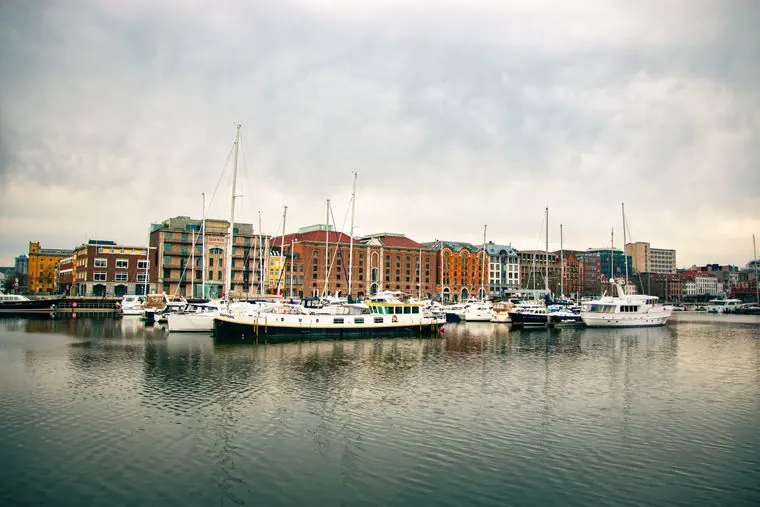

A new riverside walk for the quays
Dublin City Council is planning a continuous walking and cycling route along the south quays, from the Custom House to the docklands. Before we finalise the design, we want to hear how you use the riverside today.
The survey takes about five minutes. Your answers go straight to the project team and shape the proposal that goes to the Council later this year.
503 responses
Quays riverside survey
8 questions · about 5 minutes
Tell us how you use the quays now, what puts you off walking or cycling there, and what you'd most like to see along the new route. A few quick questions, all optional.
Start the survey